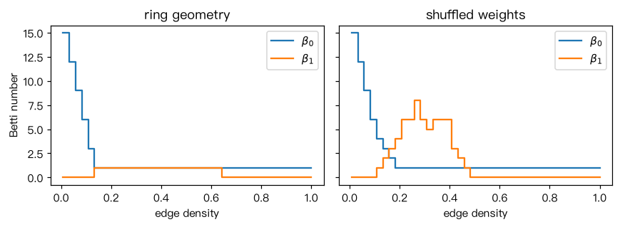

Example08 / 13
持续同调入门——加权网络在阈值过滤下的贝蒂曲线
对一个加权网络，按边权从大到小逐步加入边（过滤），在每一步构造团复形（clique complex， 这里只取到三角形），计算 beta_0（连通分支数）与 beta_1（未被三角形填满的环的数目）。 两个模拟网络：环状几何网络（节点均匀排在圆周上，权重随距离衰减）与打乱权重的对照。 解读：环状网络在中间阈值段出现持续存在的 beta_1 = 1（一个大环），打乱后的网络 beta_1 的 峰更早、更“碎”。持续同调把“在哪些阈值下存在多少个洞”作为特征，而不是只看一个阈值。
Output输出图

Output文字输出
环状网络：beta_1 = 1 持续的密度区间长度 ≈ 0.50（占过滤步数比例），beta_1 最大值 1 打乱权重：beta_1 最大值 8，出现在密度 0.26
Code代码
# 对一个加权网络，按边权从大到小逐步加入边（过滤），在每一步构造团复形（clique complex，
# 这里只取到三角形），计算 beta_0（连通分支数）与 beta_1（未被三角形填满的环的数目）。
# 两个模拟网络：环状几何网络（节点均匀排在圆周上，权重随距离衰减）与打乱权重的对照。
# 解读：环状网络在中间阈值段出现持续存在的 beta_1 = 1（一个大环），打乱后的网络 beta_1 的
# 峰更早、更“碎”。持续同调把“在哪些阈值下存在多少个洞”作为特征，而不是只看一个阈值。
import numpy as np
import networkx as nx
import matplotlib.pyplot as plt
from itertools import combinations
def betti_curve(W, n_steps=40):
n = W.shape[0]
iu = np.triu_indices(n, 1)
w_sorted = np.sort(W[iu])[::-1]
thresholds = w_sorted[np.linspace(0, len(w_sorted) - 1, n_steps).astype(int)]
b0, b1 = [], []
for t in thresholds:
G = nx.Graph(); G.add_nodes_from(range(n))
G.add_edges_from((i, j) for i, j in zip(*iu) if W[i, j] >= t)
E = [tuple(sorted(e)) for e in G.edges()]
T = [tuple(sorted(c)) for c in nx.enumerate_all_cliques(G) if len(c) == 3]
eidx = {e: k for k, e in enumerate(E)}
B1 = np.zeros((n, len(E)))
for k, (u, v) in enumerate(E):
B1[u, k], B1[v, k] = -1, 1
B2 = np.zeros((len(E), len(T)))
for k, (a, b, c) in enumerate(T):
B2[eidx[(b, c)], k], B2[eidx[(a, c)], k], B2[eidx[(a, b)], k] = 1, -1, 1
r1 = np.linalg.matrix_rank(B1) if len(E) else 0
r2 = np.linalg.matrix_rank(B2) if len(T) else 0
b0.append(n - r1); b1.append(len(E) - r1 - r2)
density = np.array([np.mean(W[iu] >= t) for t in thresholds])
return density, np.array(b0), np.array(b1)
n = 16
theta = 2 * np.pi * np.arange(n) / n
D = np.abs(np.subtract.outer(theta, theta)); D = np.minimum(D, 2 * np.pi - D)
rng = np.random.default_rng(0)
W_ring = np.exp(-D / 0.4) + 0.01 * rng.random((n, n)); W_ring = (W_ring + W_ring.T) / 2
np.fill_diagonal(W_ring, 0)
iu = np.triu_indices(n, 1)
W_shuf = np.zeros_like(W_ring); W_shuf[iu] = rng.permutation(W_ring[iu]); W_shuf += W_shuf.T
d1, b0r, b1r = betti_curve(W_ring)
d2, b0s, b1s = betti_curve(W_shuf)
print(f"环状网络：beta_1 = 1 持续的密度区间长度 ≈ {np.sum(b1r == 1) / len(b1r):.2f}（占过滤步数比例），"
f"beta_1 最大值 {b1r.max()}")
print(f"打乱权重：beta_1 最大值 {b1s.max()}，出现在密度 {d2[np.argmax(b1s)]:.2f}")
fig, ax = plt.subplots(1, 2, figsize=(8, 3), sharey=True)
for a, d, b0, b1, ttl in [(ax[0], d1, b0r, b1r, "ring geometry"), (ax[1], d2, b0s, b1s, "shuffled weights")]:
a.step(d, b0, where="post", label=r"$\beta_0$"); a.step(d, b1, where="post", label=r"$\beta_1$")
a.set_xlabel("edge density"); a.set_title(ttl); a.legend()
ax[0].set_ylabel("Betti number")
plt.tight_layout(); plt.show()Run在浏览器中运行
首次加载 Python 环境约需 20–40 秒；可以修改参数后重新运行。